01 / FRESHNESS WINNER
Forecast Rain
Time falls downward; cap pressure moves sideways. A breach lands beyond the red wall.
VERY FRESHLOW INK
Fourteen visual systems built around the actual question: will a service cross its own cap before the month ends? Every mark maps to current spend, forecast landing, headroom, or prepaid runway. No invented sparklines, no mixed-currency total, and no repository changes for the mockups.
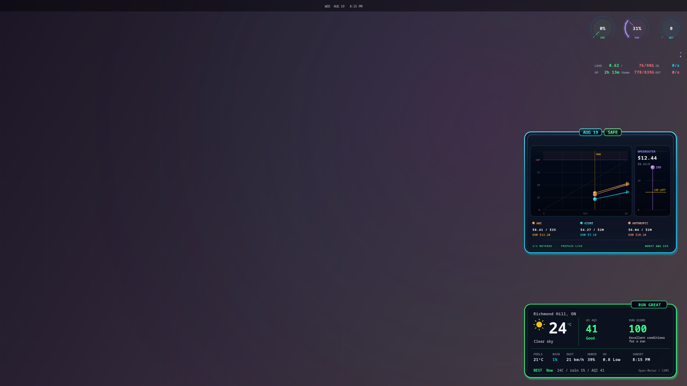
Time falls downward; cap pressure moves sideways. A breach lands beyond the red wall.
Forecasts hang below one ceiling. Empty space is headroom; crossing it is impossible to miss.
Each lens spans actual to forecast. Its gap from the cap is remaining safety.
The most conventional of the new set, but clearest and easiest to ship responsibly.
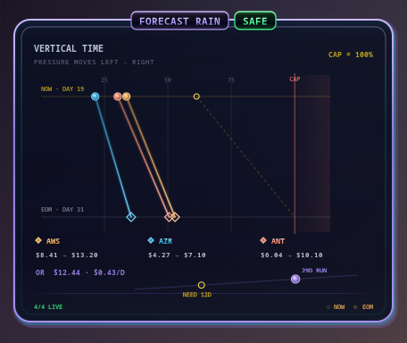
Providers begin at “now” along the top edge and fall toward their month-end landing. Their horizontal position is the percentage of their own cap—not dollars—so AWS and Azure remain comparable without pretending their money pools are one account.
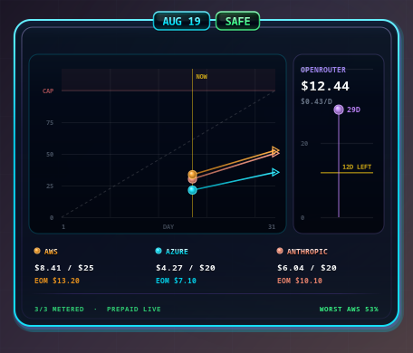
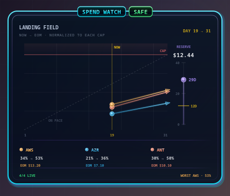
Day on x, cap pressure on y. The forecast endpoint crossing the ceiling is the alarm. Precise and immediately learnable.
Time becomes gravity and the cap becomes a wall. Sparse, distinctive, and still a fully honest affine view of the data.
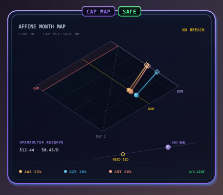
The same plot rotated into a diamond. Beautiful, but the diagonal axes demand more attention than an ambient widget should.
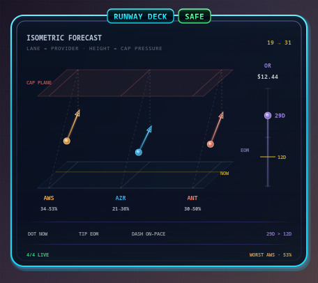
Provider lanes recede in depth and rise toward a cap plane. The most instrument-like option; worth testing at peripheral distance.
Metered services share normalized geometry while prepaid gets its own day rail. Dense, rigorous, and scalable to more providers.
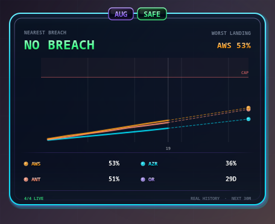
The quietest trajectory version. It becomes valuable only after real daily samples exist; until then, the extra path should not be invented.
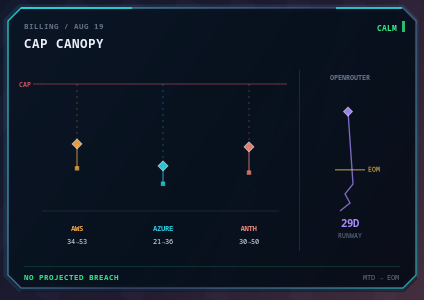
Current squares and forecast diamonds hang under a literal ceiling. Empty vertical space is headroom; only a crossing earns red glow.
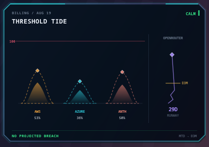
Actual and forecast become paired crests. Very wallpaper-like and calm, though curved height sacrifices a little precision.
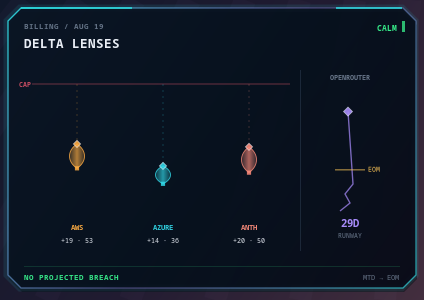
The lens itself is expected remaining burn. Its upper edge is EOM forecast; its distance to the ceiling is headroom.
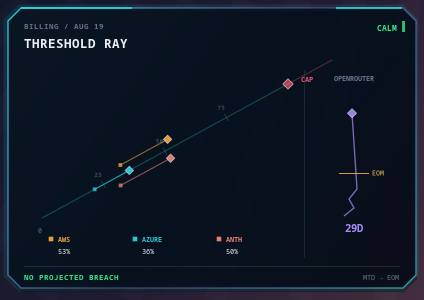
All services dock on one diagonal 0–100% ray. It takes a moment to learn, then asks for almost no eye movement.
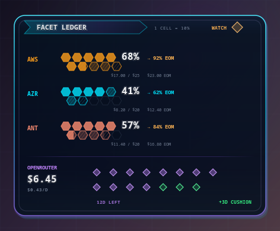
Each hex is 10% of a provider cap; clipped boundary cells preserve the true percentage. It is bar-adjacent, but the texture is fresh.
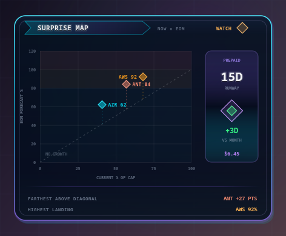
Current cap pressure × forecast landing. Analytically strongest, but too much thinking for the default always-on face.
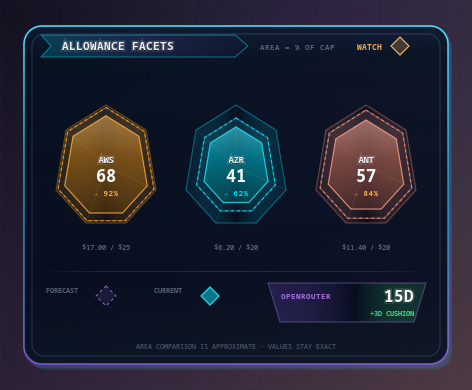
Nested gem area maps current and forecast percentages. Distinctive and serene; exact values stay visible because area is approximate to the eye.
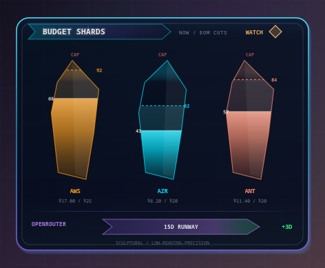
Beautiful, but fundamentally a shaped vertical gauge. Included to show where fresh geometry becomes ornamental bar dressing.
Mixed currencies and prepaid balances cannot honestly become one spend total.
A forecast crosses a wall, ceiling, or plane. Danger is not merely red copy.
Runway compares with days left in the month, never with another provider's cap.
Current→forecast is a segment. A sparkline appears only after real samples exist.